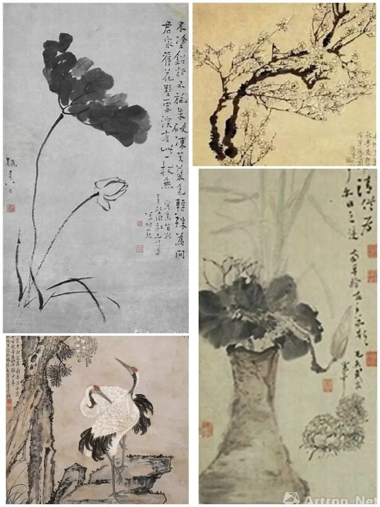

【徜扬恣肆·十七】寓绻淮扬，一梦扬州
寓绻淮扬，一梦扬州
行者
初识扬州，是“烟月扬州如梦寐”，如同烟雨江南中彳亍着的明朗少女，她顾盼流姿的目光吸引着我们踏入着这如梦如幻的风月之城。我很好奇，究竟是什么样的魅力让无数文人骚客认为这是他们的第二故乡，是怎样的绝代风华诱使“万艘龙舸绿丝间，载到扬州尽不还。”

我想或许瘦西湖旁的垂柳会向我诉说它婉转的故事，或者是大明寺的梵音会带来久远的答案，或者是扬州八怪的书画作品中藏着跨越时空的秘密。怀着这样的期待，加入了实践团，遇见了志同道合的伙伴，和我一起去深究扬州的古往今来。可惜的是，由于疫情的原因，不能亲临这片土地，但网络的互联互通功能使得我们能够以另一种方式揭开扬州神秘的面纱。

通过与扬州博物馆的主任连线，他带我们神游了朦胧的扬州，通过主任的介绍，扬州城繁荣毓秀的面貌逐渐变得清晰。长达三个小时的通话，我逐渐拜服于古人高雅的审美意趣，也为郑板桥洒脱的人格魅力所感染。大运河开凿的历史也让我认识到了扬州盐商这一特殊商人群体，在他们的身上，古代扬州的经济繁荣状况可见一斑。随着祖国一带一路建设，扬州城成为一带一路经济建设的重要节点城市，这给扬州的社会氛围带来了极大的影响，促使其成为一个开放包容的现代化城市。
扬州似是一壶醇厚的女儿红，他不似二锅头一般入口辛辣，他需要的是每个这个城市的过客细细品尝其中的酸、甜、苦、辣、辛、涩，不知不觉的醉倒在扬州的烟雨中。神游扬州一趟，我终于能够理解杜牧离开扬州时的千年一叹“十年一觉扬州梦， 赢得青楼薄幸名。”